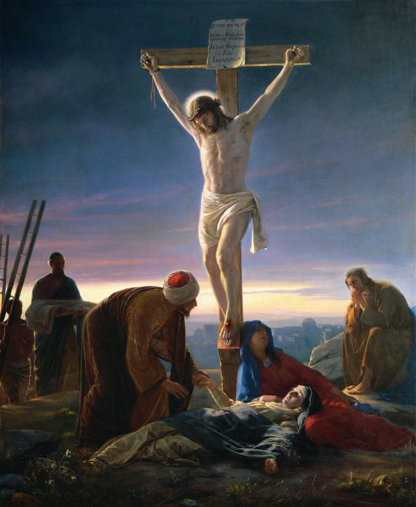
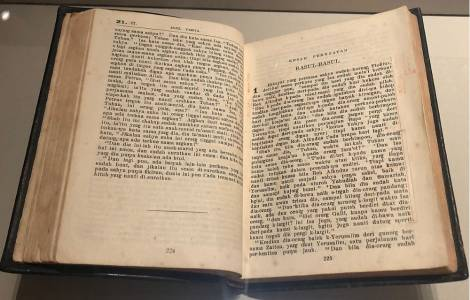

Pengenalan
Apakah Agama Kristian?
Agama Kristian merupakan salah satu agama utama di dunia dan mempunyai penganut di pelbagai negara.
Agama ini berasaskan ajaran dan kehidupan Jesus Christ atau Yesus Kristus. Penganut agama Kristian dikenali sebagai orang Kristian.
Ajaran Kristian menekankan kepercayaan kepada Tuhan, kasih sayang, pengampunan, kejujuran dan kehidupan yang baik.
Latar Belakang Agama Kristian
Agama Kristian bermula pada abad pertama Masihi di wilayah Palestin. Agama ini berkembang berdasarkan ajaran dan kehidupan Yesus Kristus.
Selepas kematian dan kebangkitan Yesus Kristus, ajaran Kristian disebarkan oleh para pengikutnya ke pelbagai kawasan di dunia.
Pada masa kini, agama Kristian mempunyai pelbagai mazhab dan tradisi seperti Katolik, Ortodoks dan Protestan.
Kepercayaan Utama Agama Kristian

Yesus Kristus
Penganut Kristian percaya bahawa Yesus Kristus merupakan tokoh utama dalam agama Kristian.
Tuhan
Penganut Kristian percaya kepada Tuhan dan ajaran tentang kasih sayang serta kehidupan yang baik.
Kasih Sayang
Kasih sayang terhadap Tuhan dan sesama manusia merupakan salah satu ajaran penting dalam agama Kristian.
Kitab Suci Agama Kristian
Bible
Kitab suci agama Kristian ialah Bible atau Alkitab. Bible menjadi sumber utama ajaran dan panduan kehidupan bagi penganut Kristian.
Bible mengandungi dua bahagian utama, iaitu Perjanjian Lama dan Perjanjian Baru.
Kandungannya merangkumi sejarah, ajaran, nasihat, doa dan panduan kehidupan.

Amalan dalam Agama Kristian
Beribadat
Penganut Kristian menghadiri gereja untuk beribadat, berdoa dan mengikuti upacara keagamaan.
Berdoa
Doa dilakukan sebagai salah satu cara berhubung dengan Tuhan dan memohon petunjuk.
Membantu Sesama
Penganut Kristian digalakkan membantu golongan yang memerlukan serta menunjukkan kasih sayang kepada orang lain.
Perayaan Utama Agama Kristian

🎄 Krismas
Krismas disambut untuk memperingati kelahiran Yesus Kristus.
🌸 Easter
Easter merupakan perayaan penting dalam agama Kristian yang memperingati kebangkitan Yesus Kristus.
Nilai-Nilai Murni
Kasih Sayang
Menunjukkan kasih sayang kepada Tuhan dan sesama manusia.
Pengampunan
Memaafkan kesalahan orang lain dan mengelakkan permusuhan.
Kejujuran
Bersikap jujur dan amanah dalam kehidupan seharian.
Kebaikan
Melakukan perkara yang baik serta membantu orang yang memerlukan.
Kerendahan Hati
Menghormati orang lain dan tidak bersikap sombong.
Kedamaian
Menggalakkan kehidupan yang aman dan harmoni.
Tanggungjawab
Melaksanakan tanggungjawab terhadap diri sendiri dan masyarakat.
Kepentingan Menghormati Agama Kristian
Menghormati agama Kristian penting bagi mewujudkan kehidupan masyarakat yang aman dan harmoni.
Setiap individu perlu menghormati kepercayaan, amalan dan perayaan agama lain.
Sikap saling menghormati dapat mengurangkan perselisihan faham dan mengeratkan hubungan antara masyarakat yang berbeza agama.
Agama Kristian dalam Kehidupan Masyarakat
Agama Kristian memainkan peranan dalam kehidupan masyarakat melalui pengajaran nilai kasih sayang, keamanan, kejujuran dan tanggungjawab.
Penganut Kristian turut terlibat dalam aktiviti kebajikan dan kemasyarakatan seperti membantu golongan yang memerlukan.
Kesimpulan
Agama Kristian merupakan agama yang menekankan kepercayaan kepada Tuhan serta nilai kasih sayang, pengampunan, kejujuran dan kedamaian.
Pemahaman terhadap agama lain dapat membantu masyarakat hidup dalam keadaan saling menghormati dan bekerjasama.
“Perbezaan bukan penghalang untuk kita hidup bersama dalam keharmonian.”